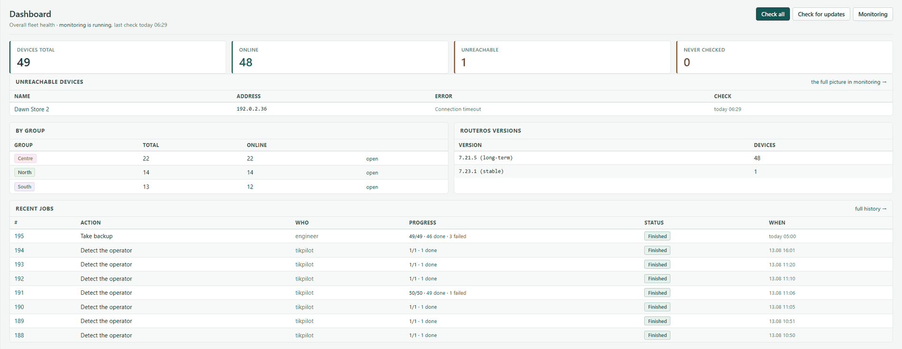
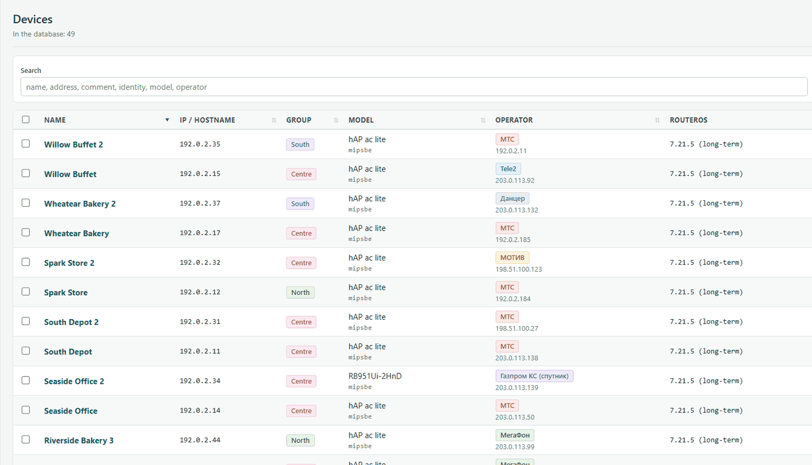
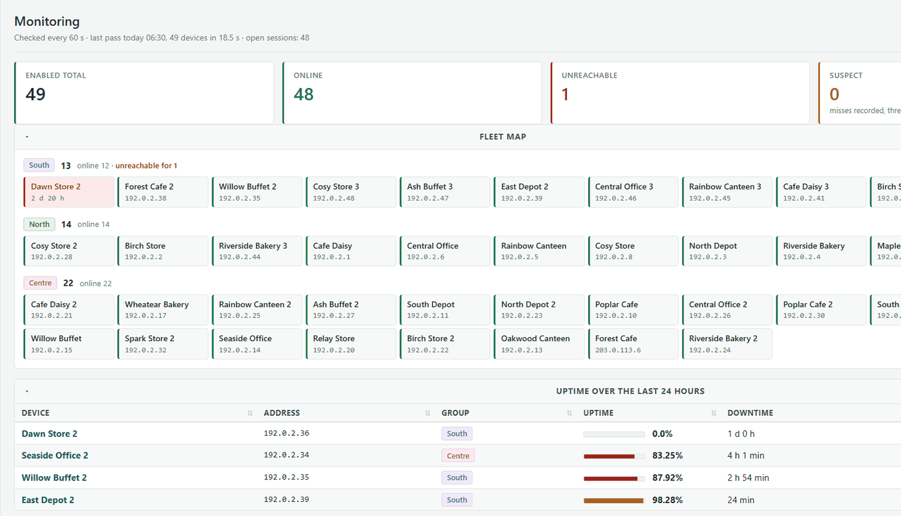
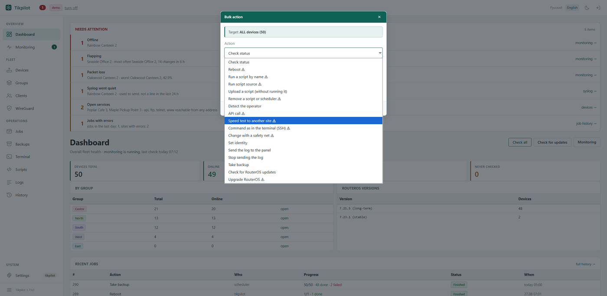
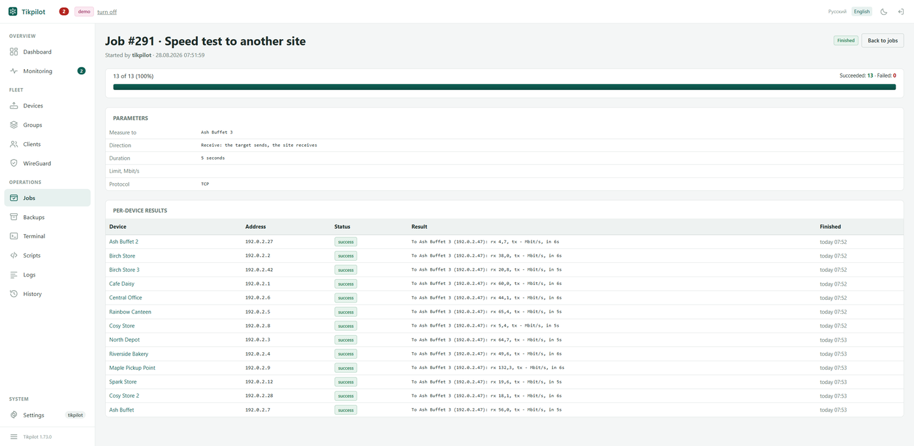
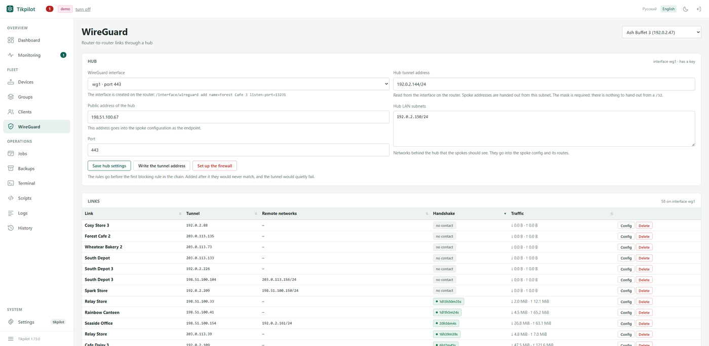
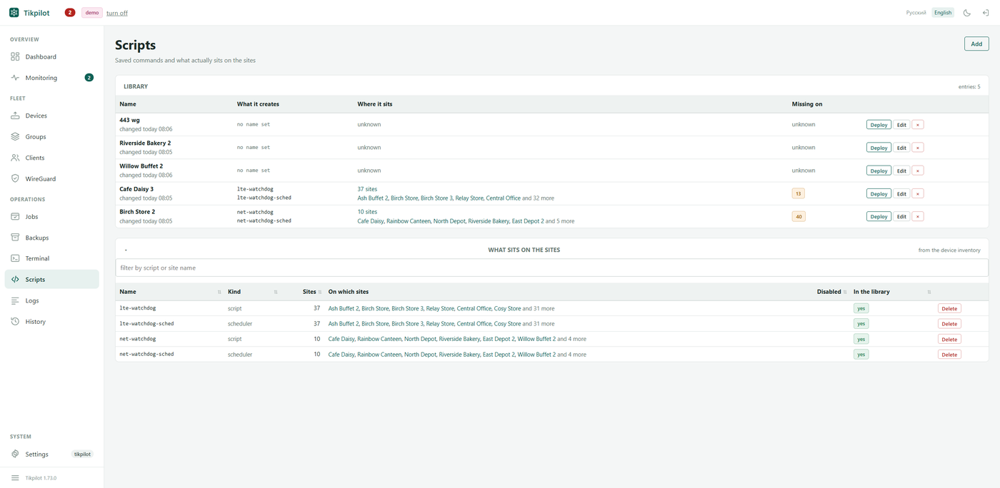
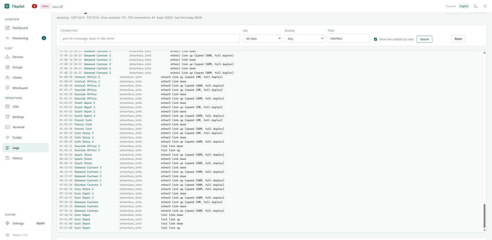

Пятьдесят роутеров в одном окне
Централизованное управление парком MikroTik: состояние, массовые операции, бэкапы и оповещения, хоть на пятьдесят роутеров, хоть на пять. Ставится на свой сервер, наружу ничего не отдаёт.
git clone https://github.com/maximdr86/tikpilot
cd tikpilot && cp .env.example .env
docker compose up -d{kind=link}

Скриншоты сняты с живого парка из 49 роутеров при включённом режиме витрины: названия точек, адреса и имена клиентов подменены самой панелью.
Видеть
Что происходит с парком, без обхода WinBox.
- За что хвататься сегодня: не в сети, мигают, потери, старые бэкапы, замолчавший журнал, нехватка памяти, открытые сервисы - одним списком.
- Кто на связи и с какого времени, простой за сутки, карта по группам.
- Задержка и потери, померенные самим роутером, а не сервером.
- Скорость на аплинке: средняя между обходами, а не всплеск за секунду.
- Сколько всего принято и передано за сутки или за неделю.
- Версия RouterOS, модель, аптайм, оператор связи и свободное место.
- Кто подключён на площадке: порт, адрес, производитель по MAC.
Делать
Однообразное на всём парке сразу.
- Перезагрузка, скрипт, бэкап, смена identity, обновление RouterOS.
- Каждый запуск это задача с ответом по каждой точке и текстом ошибки.
- Загрузка обновления отдельно от установки: качать днём, ставить ночью.
- Бэкапы по расписанию, сравнение любых двух конфигураций, поиск по всем.
- Библиотека скриптов и ответ, где какой раскатан на самом деле.
- Связи WireGuard через хаб, конфигурация споука генерируется сама.
- Тест скорости между двумя своими точками: панель сама поднимет btest на цели, померит и погасит его обратно.
- Терминал RouterOS по SSH, если нужно руками.
Не пропустить
Панель сама скажет, когда стоит посмотреть.
- Правило это условие и время: «не отвечает полчаса», «свободно меньше двух мегабайт», «бэкапа не было сутки».
- Сообщения в Телеграм сводкой: пятнадцать падений это пятнадцать строк, а не пятнадцать сообщений.
- Тихие часы и пауза по точке, чтобы дребезг не заслонял остальное.
- Публичная ссылка для подрядчика: только имена точек и состояние.
Экраны
{kind=link}

{kind=link}

{kind=link}

{kind=link}

{kind=link}

{kind=link}

{kind=link}

Установка
Нужен любой сервер с Docker, доступный до роутеров. Панель поднимется на порту 8080.
git clone https://github.com/maximdr86/tikpilot cd tikpilot cp .env.example .env docker compose up -d
Дальше: завести на роутерах пользователя API, добавить устройства руками или
загрузкой CSV. Панель работает по API RouterOS (8728/8729) и по SSH для терминала.
Обновление - git pull и docker compose up -d --build.
Чего она не делает
- Не сканирует сеть и не рисует топологию. Для этого есть Zabbix и The Dude, они это делают лучше.
- Не заменяет WinBox: тонкая настройка остаётся там.
- Не работает как облако: ни регистрации, ни чужого сервера.
- Не шлёт поток уведомлений. Только сводкой, и только если включить.
Частые вопросы
Чем заменить The Dude?
Отчасти Tikpilot. The Dude и Zabbix отвечают на вопрос «что происходит в сети» и делают это лучше. Tikpilot отвечает на другой: «сделай это на всех роутерах» - запустить скрипт, снять бэкап, обновить RouterOS, и показать результат по каждой точке. История доступности тут тоже есть, поэтому на небольшом парке он часто закрывает обе задачи. Разбор целиком: что вместо The Dude. Ещё есть разборы: массовое обновление RouterOS, бэкапы конфигов и мониторинг парка.
Как обновить RouterOS сразу на всех роутерах?
Выбрать устройства или целую группу, запустить «Проверить обновления», затем «Обновить RouterOS». Каждый запуск становится задачей с результатом по каждой точке: панель ждёт возвращения роутера, не даёт откатиться на версию ниже и проверяет свободное место до начала.
Можно ли делать бэкапы MikroTik по расписанию?
Да. Правила работают сами: бинарный .backup, текстовый .rsc или оба сразу, с хранением N последних копий на устройство. Любые две конфигурации сравниваются построчно, и есть поиск по всем сохранённым.
Работает ли панель без интернета?
Да. Она общается только с вашими роутерами по API RouterOS и по SSH. Наружу есть ровно два необязательных выхода: поиск оператора связи в реестре адресов и скачивание базы производителей по MAC. Оба включаются вручную.
Сколько стоит?
Нисколько. Лицензия MIT, исходники на GitHub, платной версии и облачного аккаунта нет.
Почему так сделано
Один процесс и файл базы
Python, FastAPI, SQLite. Ни Redis, ни очередей, ни сборки фронтенда.
Ни одного обращения наружу
Страницы собираются на сервере, шрифты и скрипты свои. Панель обязана работать в изолированной сети.
Пароли и доступ
Пароли роутеров зашифрованы ключом, который лежит отдельно от базы, права выдаются по каждой возможности, всё сделанное пишется в журнал.
Проверено настоящим протоколом
Больше трёхсот тестов на трёх версиях Python, и заглушка, говорящая на настоящем протоколе RouterOS.
Кто это написал
Я сисадмин, обслуживаю 49 точек: магазины, столовые, удалённые площадки. Панель выросла из моей работы и работает на моём парке, поэтому ошибки достаются мне первому.
Код написан нейросетью (Claude) под моим руководством. Говорю об этом сразу, чтобы никто не выяснял это из истории коммитов. Лицензия MIT: посмотрите код, прежде чем доверять ему свои роутеры.